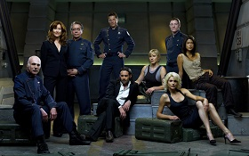

Home
About Me
Tv Shows and Movies
Geek Calendar
|
|
Battlestar Galatica

The story arc of Battlestar Galactica is set in a distant star system,
where a civilization of humans live on a group of planets known as the Twelve Colonies. In the past, the Colonies
had been at war with a cybernetic race of their own creation, known as the Cylons. With the unwitting help of a
human named Gaius Baltar, the Cylons launch a sudden sneak attack on the Colonies, laying waste to the planets and
devastating their populations. Out of a population numbering in the billions, only approximately 50,000 humans survive,
most of whom were aboard civilian ships that avoided destruction. Of all the Colonial Fleet, the eponymous Battlestar
Galactica appears to be the only military capital ship that survived the attack. Under the leadership of Colonial Fleet
officer Commander William "Bill" Adama and President Laura Roslin, the Galactica and its crew take up
the task of leading the small fugitive fleet of survivors into space in search of a fabled refuge known as Earth.
BACK
|